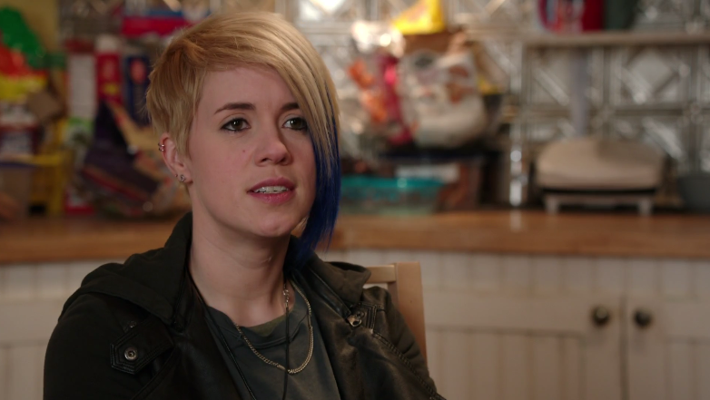

Silicon Valley Breakdown: The Tiny-Ass Outgoing Stream
MAY 11, 2015
Tweet Silicon Valley has to be one of the best shows on TV right now. It's hilarious and on point and Mike Judge is clearly some sort of savant genius. That said it actually knows some stuff about tech. Like the "Tip to Tip" algorithm from the end of Season One. (If you need proof that it works, obviously someone wrote a paper on it). The characters really say a bunch of technically interesting stuff. And I think it deserves a super high level breakdown.
A couple weeks ago, Pied Piper got it's first female engineer (if you haven't watched it yet, you really should because it's spot on). Anyway, I wanted to break down Carla's quote from her interview:
"I'm using VP9 ABR to reduce bits and using WebRTC to carry the bulk of the load via P2P. So basically I pay for one tiny-ass outgoing stream and the user's ISP picks up the whole tab" -Carla Walton
But really...what does this mean? And what does it have to do with a tiny-ass stream? Let's break it down a little.
VP9 ABR
According to Wikipedia,VP9 is an open and royalty free video coding format being developed by Google. Some of its main goals is to reduce the bit rate (the ratios of bits -- the language computers understand -- that are transferred between devices) by 50% compared to a VP8 (another video compression format owned by Google) AND have a better compression rate than High Efficiency Video Coding (or HEVC, which is a video compression standard).
ABR stands for Adaptive Bitrate Streaming - a technique used for streaming multimedia. VP9 is a type of Adaptive Bitrate Streaming. According to Streaming Media, ABR has 3 main characterists:
- They produce multiple files from the same source file to distribute to viewers watching on different devices via different connection speeds.
- They distribute the files adaptively, changing the stream thats delivered to adapt to changes in effective throughput and available CPU cycles on the playback station.
- They operate transparently to the user, so that the viewer clicks one button and all stream switching occurs behind the scenes. The viewer may notice a slight change in quality as the streams switch, but no action is required on his part.
WebRTC
AKA Web Real-Time Communication. WebRTC leverages a set of plugin-free APIs that can be used in both desktop and mobile browsers. The main benefit of WebRTC is real-time communication (think video chat). One of the most difficult aspects of real time chats is how to locate and establish a network socket connection with another computer's web browser (in order to transmit the data between both parties)
Instead, WebRTC establishes "channels" which are kind of private hangouts. Only those who know about the channels are able to send and receive messages because they require a unique identifier in order to access them.
P2P
Aka peer-to-peer. It is a decentralized communications model where each party has the same capabilities and either party can initiate a communication session. Unlike the client/server model, in which the client makes a service request and the server fulfills the request, the P2P network model allows each party to act as both a client and server.
BOOM! This is the key to what Carla is saying. Since the user's ISP (Internet Service Provider) acts as the client and the server, the Comcasts and Verizon's of the world will be footing the bill which ultimately is being paid for by the users.
NOTE: this blog post does not cover everything by any means! This is just what I found in my research. I highly encourage everyone to do some googling to fill in the rest of the cracks. There are a ton of rad resources out there!